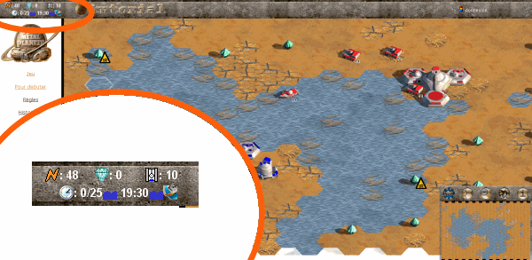
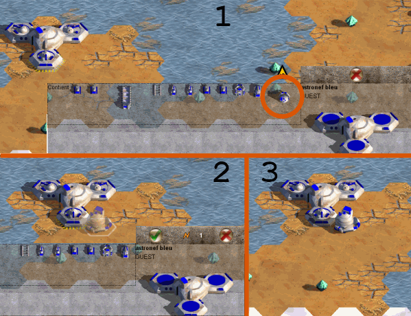

Bravo pour votre atterrisage
Chacune de vos actions vous coûte un certain nombre de point d'action (PA).
Votre stock de PA se reconstitue avec le temps, en fonction de la vitesse de la partie.
(cette dernière est définie une fois pour toute avant le début du jeu).
Les marrées transforment les cases de récifs et marécages en zone terrestre ou maritime.
La topologie de la carte peut donc radicalement changer d'un tour à l'autre.
Toutes ces informations importantes sont regroupées en haut à gauche de l'écran.

Vous y trouverez :
Vos PA, le nombre de minerai stocké dans votre astronef, le nombre de véhicule
tour actuel/tour total, marrée actuelle, date/heure du prochain changement, marrée future,
tour de la prochaine fenêtre de décollage.
Vos transporteurs
Ils peuvent être utilisés pour récolter le minerais ou pour transporter
vos destructeurs à des fins plus agressives :
 |
Pondeuse meteo |
- Engin terrestre.
- Prévoit les marées à venir lorqu'elle est sortie et
non neutralisée.
- Peut transporter un minerai.
- Peut convertir un minerai en une pièce de la reserve
(Char, Crabe ou Ponton).
- Encombrement de deux places.
|
 |
Crabe |
- Engin terrestre.
- Transporteur avec une capacité de 2 places.
- Peut transporter les Minerais, les Chars, les Gros Tas
et les Pontons.
- Encombrement de deux places.
|
 |
Barge |
- Engin marin.
- Pièce qui occupe deux cases.
- Transporteur marin avec une capacité de 4 places.
- Peut transporter les Minerais, les Chars, les Gros Tas,
les Pontons, les Crabes et les Pondeuses.
- Non transportable.
|
Pour avoir accès aux prévisions des marrées, vous devez sortir la pondeuse météo de votre astronef.

- Cliquez sur une tourelle de votre astronef, puis sur la pondeuse météo.
- Cliquez une case adjacente à la tourelle. (le coût de cette action s'affiche alors)
- Valider l'action en cliquant sur le bouton OK ou à nouveau sur la case adjacente.